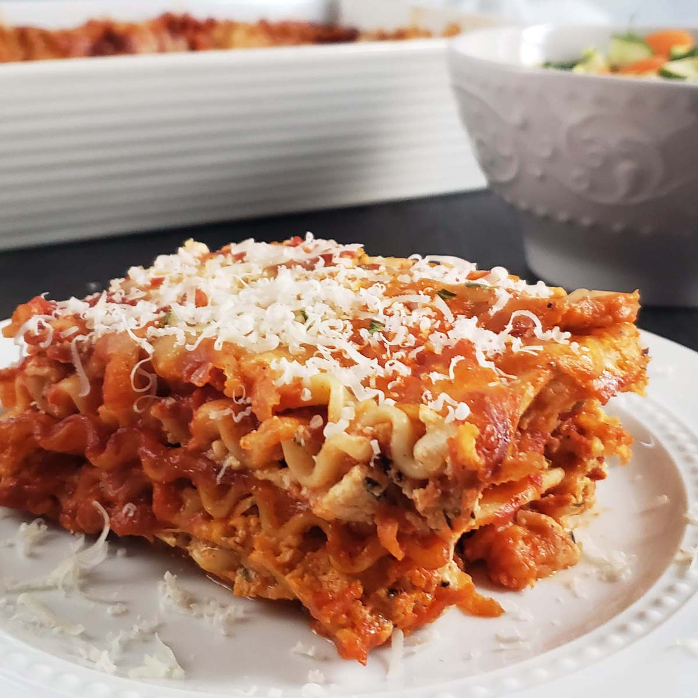

Four Cheese Lasagna
Home

"Four Cheese Lasagna" is a delicious and hearty Italian dish that combines layers of pasta, rich tomato sauce, and a blend of four different cheeses. The cheeses typically used in this recipe include mozzarella, ricotta, Parmesan, and provolone, which create a creamy and flavorful filling. The lasagna is baked until the cheese is melted and bubbly, resulting in a comforting and satisfying meal that is perfect for family dinners or special occasions. Whether served with a side of garlic bread or a fresh salad, Four Cheese Lasagna is sure to be a crowd-pleaser.
Ingredients:
- Lasagna noodles
- Tomato sauce
- Mozzarella cheese
- Ricotta cheese
- Parmesan cheese
- Provolone cheese
Instructions:
- Preheat the oven to 375°F (190°C).
- Cook the lasagna noodles according to the package instructions. Drain and set aside.
- In a mixing bowl, combine the ricotta cheese, Parmesan cheese, and provolone cheese. Mix well.
- Spread a thin layer of tomato sauce on the bottom of a baking dish.
- Layer the cooked lasagna noodles over the sauce, followed by a layer of the cheese mixture and a sprinkle of mozzarella cheese.
- Repeat the layers until all ingredients are used, ending with a layer of tomato sauce and a generous topping of mozzarella cheese.
- Cover the baking dish with aluminum foil and bake for 25 minutes. Then, remove the foil and bake for an additional 20 minutes, or until the cheese is melted and bubbly.
- >Let the lasagna cool for a few minutes before serving. Enjoy!